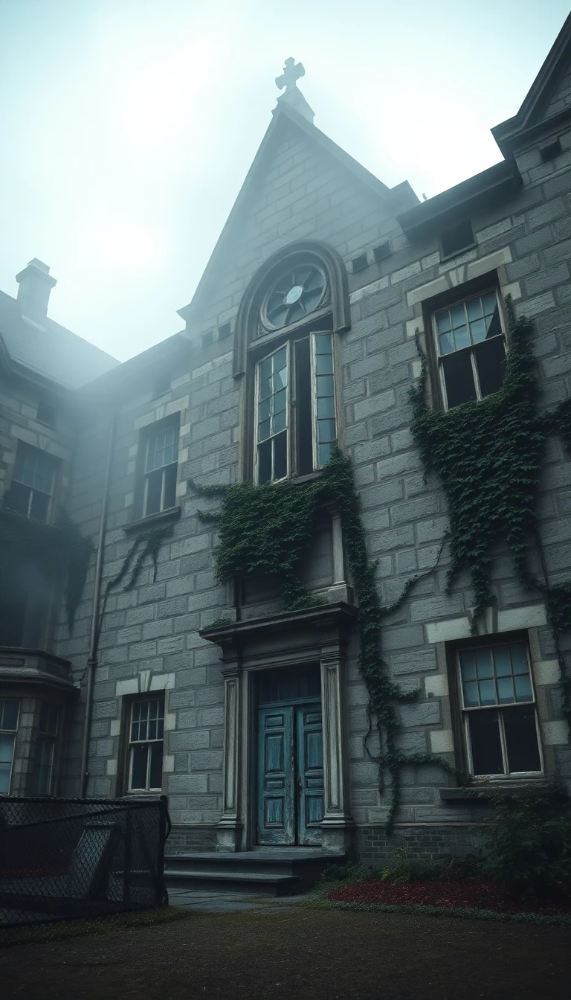

The Eerie Beauty of Abandoned Spaces: A Photographic Journey
In the hushed corridors of forgotten buildings and the overgrown paths of deserted towns, photographer Alex Thorne has found an unexpected muse. His latest exhibition, "Echoes of the Past," showcases the haunting allure of abandoned spaces, inviting viewers to explore the liminal realm between what was and what remains.
Thorne's journey began three years ago when he stumbled upon an abandoned amusement park on the outskirts of his hometown. "There was something magical about the rusted Ferris wheel against the backdrop of encroaching nature," Thorne recalls. "It was as if time had stopped, yet life continued in a different form."
Since then, Thorne has traveled across the country, documenting forgotten malls, vacant hotels, and deserted factories. His photographs capture more than just decay; they reveal the stories etched in peeling wallpaper and the dreams gathering dust in empty corridors.
"These spaces exist in a kind of limbo," Thorne explains. "They're no longer what they were built to be, but they haven't yet transformed into something new. It's in this in-between state that I find the most compelling narratives."
The Art of Decay
Thorne's work challenges conventional notions of beauty, finding aesthetic value in rust, crumbling concrete, and nature's slow reclamation of man-made structures. His images are a stark reminder of the impermanence of human endeavors and the relentless march of time.
One particularly striking photograph in the exhibition shows a grand ballroom in an abandoned hotel. Ornate chandeliers hang precariously from a ceiling where paint peels in elegant swirls. Shafts of sunlight cut through broken windows, illuminating dust motes that dance in the air like forgotten revelers.
"I want viewers to feel the weight of history in these images," Thorne says. "But also the strange peace that settles over a place when human activity ceases. There's a beauty in that silence, in that slow return to nature."
Ethical Considerations
Thorne's work, while visually stunning, raises ethical questions about urban exploration and the documentation of abandoned spaces. He is quick to address these concerns, emphasizing his strict "leave no trace" policy and his commitment to safety.
"I never break into properties or disturb the sites I photograph," he insists. "Many of these places are hazardous, and I work closely with local authorities and property owners to gain legal access. My goal is to document and preserve these spaces through my lens, not to contribute to their deterioration."
A Growing Movement
Thorne's exhibition comes at a time when interest in abandoned places and urban exploration is surging. Social media platforms are filled with images of decaying buildings and forgotten landscapes, often tagged with the popular hashtag #abandoned.
This trend has led to increased awareness of historic preservation issues and sparked debates about urban development and the fate of disused spaces. Thorne hopes his work will contribute meaningfully to these conversations.
"Each of these places holds a piece of our collective history," he says. "By documenting them, we're not just creating art, we're preserving memories and stories that might otherwise be lost to time."
Looking to the Future
As "Echoes of the Past" continues to draw crowds, Thorne is already planning his next project. He hints at a series focusing on abandoned spaces that have been reclaimed and repurposed, showcasing the potential for renewal in even the most forgotten places.
"There's a poetry in abandonment," Thorne concludes, "but there's also hope. These spaces remind us of our past, but they can also inspire us to imagine new futures. That's the real power of liminal spaces – they're full of possibility."
The Abandoned Asylum: A Journey Through Time and Madness

On the outskirts of our town, shrouded in mist and mystery, stands the imposing structure of the Willowbrook Asylum. Once a bustling center for mental health treatment, it now lies abandoned, its crumbling walls holding secrets of a bygone era. Our reporter, Sarah Thompson, ventured inside this forgotten realm to uncover its haunting history and uncertain future.
A Troubled Past
Opened in 1890, Willowbrook Asylum was hailed as a state-of-the-art facility for the treatment of mental illness. Its grand Victorian architecture and sprawling grounds were designed to provide a peaceful environment for healing. However, as our investigation revealed, the reality behind its ornate façade was far from idyllic.
Former nurse Margaret Wheeler (82) shared her experiences: "We were understaffed and overwhelmed. The treatments, by today's standards, were barbaric. Electroshock therapy, ice baths, isolation – we thought we were helping, but looking back, I'm not so sure."
Willowbrook's history is marred by allegations of patient mistreatment, overcrowding, and controversial medical practices. In the 1950s, at its peak, the asylum housed over 3,000 patients, more than triple its intended capacity. This overcrowding led to deteriorating conditions and inadequate care.
The Ghosts of Willowbrook
As Thompson explored the decaying corridors of Willowbrook, she couldn't shake the feeling of being watched. "There's an energy here," she reported. "It's as if the walls themselves are whispering the stories of those who lived and died within them."
Local paranormal investigator, Jack Harper, has conducted several overnight investigations in the abandoned asylum. "We've recorded unexplained sounds, sudden temperature drops, and even glimpsed shadowy figures," Harper claims. "Whether you believe in ghosts or not, there's no denying that Willowbrook has a palpable atmosphere of residual emotion."
A Reflection of Society
Dr. Elena Rodriguez, a historian specializing in the evolution of mental health treatment, sees Willowbrook as a stark reminder of how far we've come – and how far we still have to go.
"Asylums like Willowbrook were born out of a genuine desire to help," Rodriguez explains. "But they quickly became warehouses for society's unwanted. The mentally ill, the developmentally disabled, even those suffering from epilepsy or tuberculosis – all were shut away here, often for life."
The asylum's eventual closure in 1995 came after decades of controversy and reform attempts. "Deinstitutionalization was meant to be a more humane approach," Rodriguez continues. "But without adequate community support, many former patients ended up homeless or incarcerated. In many ways, we're still grappling with the fallout."
Preserving History or Exploiting Tragedy?
The future of Willowbrook Asylum remains uncertain. While some locals advocate for its demolition, citing safety concerns and painful memories, others argue for its preservation as a historical site and educational resource.
City councilwoman Debra Patel is leading efforts to turn part of the asylum into a museum. "We can't erase this history, no matter how uncomfortable it makes us," Patel argues. "By preserving Willowbrook, we create an opportunity to learn from past mistakes and to honor the memories of those who suffered here."
However, not everyone agrees with this approach. Mental health advocate Thomas Chen fears that turning Willowbrook into a tourist attraction could trivialize the experiences of former patients and their families. "There's a fine line between education and exploitation," Chen warns. "We need to be very careful about how we frame this history."
The Lessons of Willowbrook
As debate over the asylum's future continues, one thing is clear: Willowbrook's legacy extends far beyond its crumbling walls. It stands as a complex monument to changing attitudes towards mental health, the consequences of institutional neglect, and the ongoing struggle to provide compassionate care to society's most vulnerable members.
"Places like Willowbrook are important," Dr. Rodriguez concludes. "They remind us of the human cost of failed policies and the dangers of otherizing those who are different. But they also challenge us to do better, to keep pushing for more humane and effective mental health care. In that sense, perhaps Willowbrook still has a role to play in healing."
As the sun sets behind the asylum's imposing silhouette, casting long shadows across its overgrown grounds, one can't help but reflect on the countless lives touched by this place. In its decay, Willowbrook Asylum stands as a haunting reminder of our past and a silent challenge to our future.